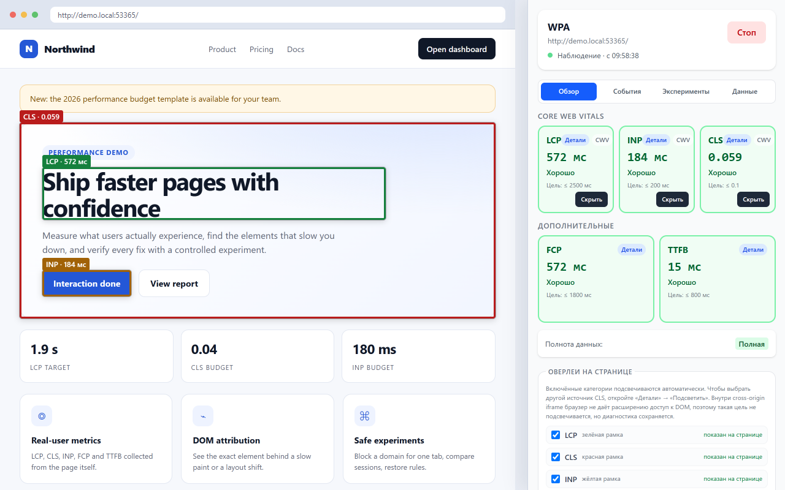
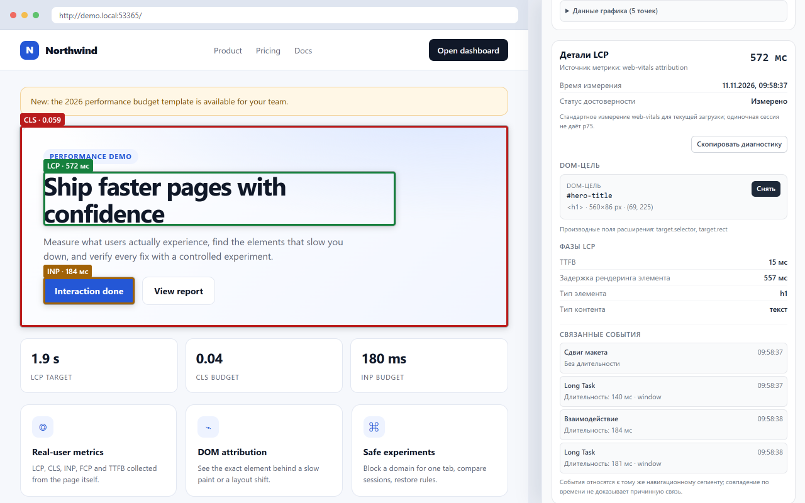
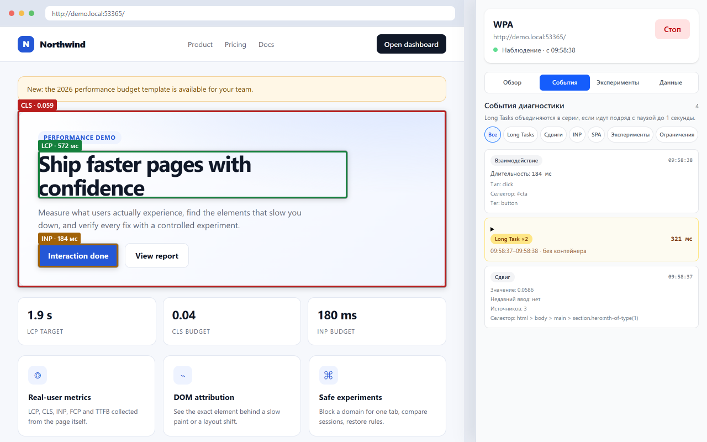
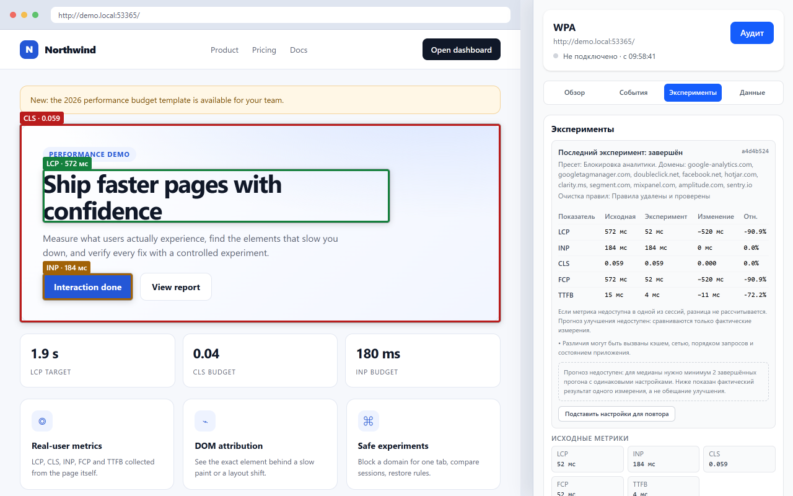
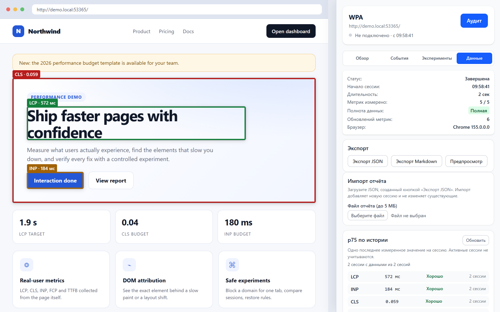

5 скриншотов. Одобрите их, и можно подавать в AMO.

01 — Overview: Core Web Vitals + chart

02 — Metric details: LCP attribution

03 — Events: Long Tasks, interactions, layout shifts

04 — Experiments: baseline vs. experiment comparison

05 — Data: export, import, p75 summary, history